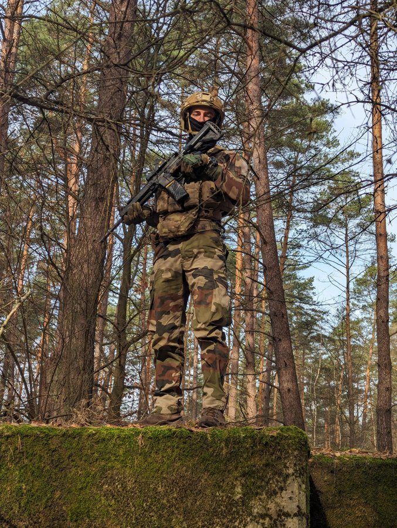

Période : 2022 – 2024
- Parachutiste et tireur d’élite.
- Chef d’équipe (3 personnes).
- Mission extérieure de 6 mois en Pologne.
Actions principales
- Formation de militaires ukrainiens.
- Pilotage de drones.
- Stage tireur de précision.
Expérience exigeante : gestion du risque, stress, travail en équipe.
